Code
import numpy as np import pandas as pd import matplotlib.pyplot as pltimport seaborn as sns| type_logement | annee_construction | surface_habitable | type_energie_chauffage | conso_energie | classe_conso_energie | emission_ges | |
|---|---|---|---|---|---|---|---|
| 0 | 1 | 1988 | 25 | 2 | 300.44 | C | 13.23 |
| 1 | 1 | 1996 | 64 | 1 | 148.17 | D | 34.67 |
| 2 | 1 | 1970 | 46 | 2 | 257.00 | C | 12.00 |
| 3 | 2 | 1958 | 74 | 1 | 317.03 | F | 74.18 |
| 4 | 1 | 2013 | 38 | 1 | 53.42 | C | 12.50 |
Les variables sélectionnées pour cette étude sont les suivantes :- type_logement : type du logement (1 = appartement, 2 = maison) — variable qualitative.- annee_construction : année de construction du logement — variable quantitative.- surface_habitable : surface habitable en mètres carrés — variable quantitative.- type_energie_chauffage : type d’énergie utilisée pour le chauffage (1 = gaz, 2 = électricité, 3 = autre) — variable qualitative.- conso_energie : consommation énergétique annuelle en kWhEP/m² — variable quantitative.- classe_conso_energie : classe de consommation énergétique (de A à G) — variable qualitative.- emission_ges : émissions de gaz à effet de serre en kg éq.CO₂/m² — variable quantitative.
count 1000.000000
mean 34.578000
std 25.877743
min 1.000000
25% 15.000000
50% 32.000000
75% 51.000000
max 121.000000
Name: anciennete, dtype: float64moyenne = data_dpe['anciennete'].mean()mediane = data_dpe['anciennete'].median()plt.hist(data_dpe['anciennete'], bins=30)plt.title("Distribution de l'ancienneté des logements")plt.xlabel("Ancienneté (années)")plt.ylabel("Fréquence")plt.axvline(moyenne, linewidth=2,color='red')plt.text(0.95, 0.95, f"Moyenne = {round(moyenne,1)}", transform=plt.gca().transAxes,ha='right', va='top',color='red')plt.axvline(mediane, linewidth=2,color='green')plt.text(0.95, 0.90, f"Médiane = {round(mediane,1)}", transform=plt.gca().transAxes, ha='right', va='top',color='green')plt.show()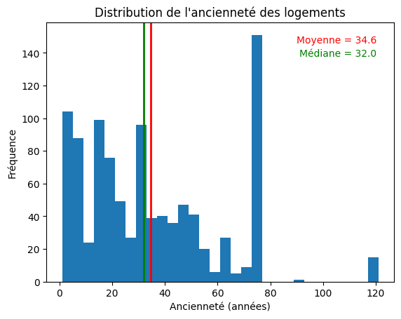
count 1000.000000
mean 82.514000
std 94.874069
min 16.000000
25% 45.750000
50% 66.000000
75% 95.250000
max 1452.000000
Name: surface_habitable, dtype: float6494.87406860092435
115moyenne = data_dpe['surface_habitable'].mean()mediane = data_dpe['surface_habitable'].median()plt.hist(data_dpe['surface_habitable'], bins=30)plt.title("Distribution de la surface habitable")plt.xlabel("Surface habitable")plt.ylabel("Fréquence")# Moyenneplt.axvline(moyenne, linewidth=2,color='red')plt.text(0.95, 0.95, f"Moyenne = {round(moyenne,1)}", transform=plt.gca().transAxes,ha='right', va='top',color='red')# Medianeplt.axvline(mediane, linewidth=2,color='green')plt.text(0.95, 0.90, f"Médiane = {round(mediane,1)}", transform=plt.gca().transAxes, ha='right', va='top',color='green')plt.show()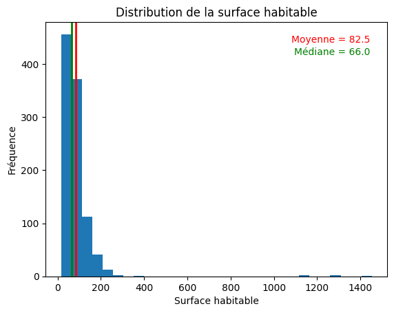
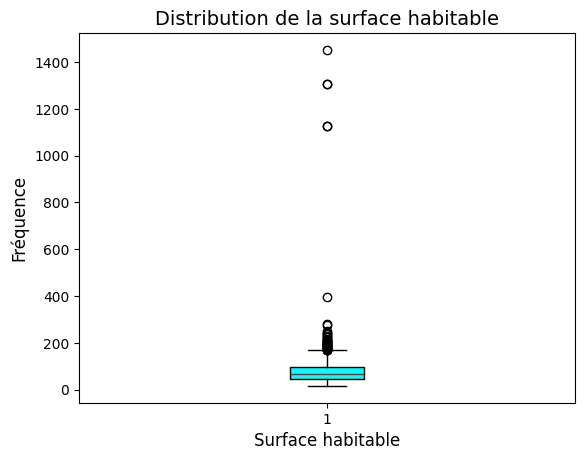
count 1000.000000
mean 184.119070
std 96.891905
min 27.920000
25% 114.735000
50% 181.165000
75% 238.245000
max 591.350000
Name: conso_energie, dtype: float6496.89190515063082
53moyenne = data_dpe["conso_energie"].mean()mediane = data_dpe["conso_energie"].median()plt.hist(data_dpe["conso_energie"], bins=30)plt.title("Distribution de la consommation de l'énergie")plt.xlabel("énergie consommée")plt.ylabel("Fréquence")# Moyenne plt.axvline(moyenne, linewidth=2,color='red')plt.text(0.95, 0.95, f"Moyenne = {round(moyenne,1)}", transform=plt.gca().transAxes,ha='right', va='top',color='red')# Medianeplt.axvline(mediane, linewidth=2,color='green')plt.text(0.95, 0.90, f"Médiane = {round(mediane,1)}", transform=plt.gca().transAxes, ha='right', va='top',color='green')plt.show()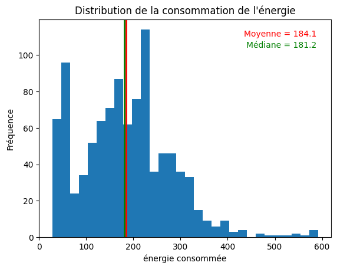
count 1000.000000
mean 21.932580
std 20.649155
min 2.000000
25% 8.602500
50% 12.695000
75% 30.000000
max 143.360000
Name: emission_ges, dtype: float6420.64915509045223
94moyenne = data_dpe['emission_ges'].mean()mediane = data_dpe['emission_ges'].median()plt.hist(data_dpe['emission_ges'], bins=30)plt.title("Distribution de la consommation degaz à effet de serre")plt.xlabel("consommation de gaz à effet de serre") plt.ylabel("Fréquence")# Moyenneplt.axvline(moyenne, linewidth=2,color='red')plt.text(0.95, 0.95, f"Moyenne = {round(moyenne,1)}", transform=plt.gca().transAxes,ha='right', va='top',color='red')# Medianeplt.axvline(mediane, linewidth=2,color='green')plt.text(0.95, 0.90, f"Médiane = {round(mediane,1)}", transform=plt.gca().transAxes, ha='right', va='top',color='green')plt.show()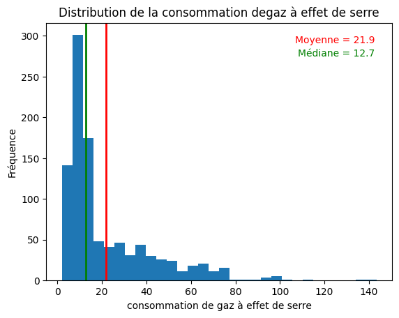
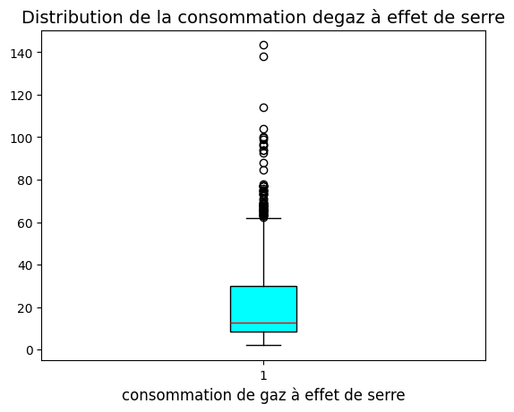
type_logement
appartement 639
maison 361
Name: count, dtype: int64sns.boxplot(x="type_logement", y="conso_energie", hue="type_logement", data=data_dpe, palette={"appartement":"cyan","maison":"lightgreen"}, dodge=False, medianprops={"color":"red"}) plt.legend([],[], frameon=False) plt.title("Distribution de la consommation d'énergie selon type de logement")plt.show()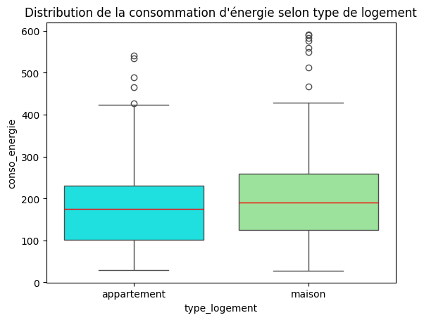
type_energie_chauffage
électricité 542
gaz 433
autre 25
Name: count, dtype: int64classe_conso_energie
A 98
B 295
C 274
D 121
E 127
F 70
G 15
Name: count, dtype: int64counts = data_dpe["classe_conso_energie"].value_counts().sort_index()plt.bar(counts.index, counts.values, color=["gold","plum","aquamarine","firebrick","limegreen","khaki","navy"])plt.title("Distribution de classe conso energie")plt.xlabel("Classe consommation d'énergie")plt.ylabel("Frequence")for i, val in enumerate(counts.values): plt.text(i, val + 0.5, str(val), ha='center', fontsize=10)plt.show()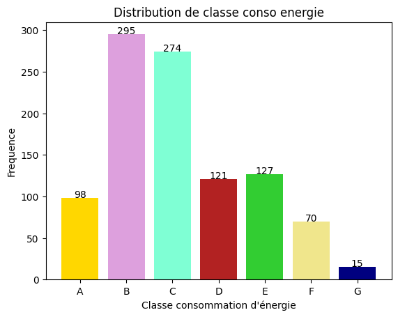
<class 'pandas.core.frame.DataFrame'>
RangeIndex: 1000 entries, 0 to 999
Data columns (total 4 columns):
# Column Non-Null Count Dtype
--- ------ -------------- -----
0 annee_construction 1000 non-null int64
1 surface_habitable 1000 non-null int64
2 conso_energie 1000 non-null float64
3 emission_ges 1000 non-null float64
dtypes: float64(2), int64(2)
memory usage: 31.4 KB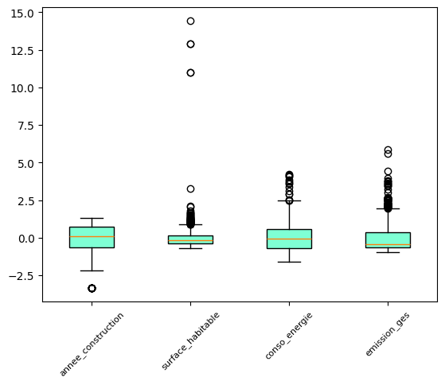
[[ 1. -0.01 -0.49 -0.51]
[-0.01 1. -0.13 0.02]
[-0.49 -0.13 1. 0.44]
[-0.51 0.02 0.44 1. ]]Méthode 2: PandasV = X.corr() V_rounded = V.round(2) print(V_rounded)
[1.96 1.03 0.54 0.47]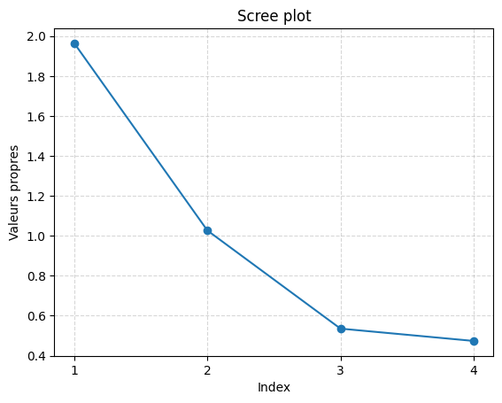
[0.49 0.75 0.88 1. ]# eigvals, eigvecs np.linalg.eigheigvals, eigvecs = np.linalg.eigh(V_rounded)# on range dans l'ordre eigenvalues idx = np.argsort(eigvals)[::-1] eigvals_sorted = eigvals[idx]eigvecs_sorted = eigvecs[:, idx]eigvecs_rounded = np.round(eigvecs_sorted, 2)eigvecs_df = pd.DataFrame(eigvecs_rounded, columns=X.columns)print(eigvecs_df) annee_construction surface_habitable conso_energie emission_ges
0 -0.59 -0.11 0.02 -0.80
1 -0.06 0.97 -0.22 -0.10
2 0.57 -0.17 -0.69 -0.41
3 0.57 0.15 0.69 -0.42# Méthode 1# Projections (scores)Y = X.values @ eigvecs_sorted # X %*% E$vectorsY_df = pd.DataFrame(Y, columns=[f"PC{i+1}" for i in range(Y.shape[1])])# D = diag(sqrt(eigenvalues))k = 2D = np.diag(np.sqrt(eigvals_sorted))C = eigvecs_sorted @ D[:, :k] # E$vectors %*% D[,1:k]# Méthode 2: correlation X vs Y[,1:k]C2 = np.corrcoef(X.values.T, Y[:, :k].T)[:X.shape[1], X.shape[1]:] # matrice correlation# Verifierdiff = C2 - C[:, :k]print("C2 (correlation directe):\n", np.round(C2, 2))print("C (E$vectors * sqrt(E$values)):\n", np.round(C[:, :k], 2))print("Diff = C2 - C:\n", np.round(diff, 2))C2 (correlation directe):
[[-0.83 -0.11]
[-0.09 0.98]
[ 0.8 -0.17]
[ 0.8 0.15]]
C (E$vectors * sqrt(E$values)):
[[-0.83 -0.12]
[-0.08 0.98]
[ 0.8 -0.17]
[ 0.8 0.15]]
Diff = C2 - C:
[[ 0. 0.]
[-0. -0.]
[ 0. -0.]
[-0. -0.]]import matplotlib.pyplot as pltimport numpy as np# Column 0 = PC1, Column 1 = PC2x = C[:, 0]y = C[:, 1]labels = X.columns plt.figure(figsize=(6,6))plt.scatter(x, y, color='red')for i, label in enumerate(labels): plt.text(x[i]+0.02, y[i]+0.02, label, fontsize=9)theta = np.linspace(0, 2*np.pi, 100)plt.plot(np.cos(theta), np.sin(theta), linestyle='--', color='blue')# X et Yplt.axhline(0, color='black', linewidth=1)plt.axvline(0, color='black', linewidth=1)plt.xlim(-1, 1)plt.ylim(-1, 1)plt.gca().set_aspect('equal', adjustable='box') # asp = 1plt.title("Cercle de corrélation")plt.xlabel("PC1")plt.ylabel("PC2")plt.grid(True, linestyle='--', alpha=0.5)plt.show()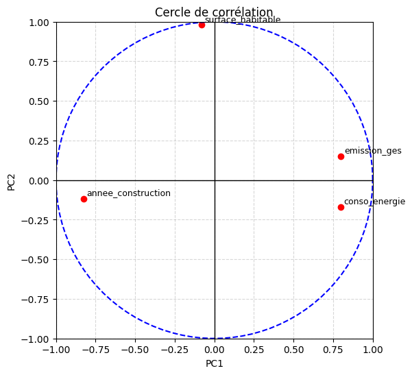
from sklearn.decomposition import PCAfrom sklearn.preprocessing import StandardScalerimport pandas as pdX = data.copy()# scaler = StandardScaler()X_scaled = scaler.fit_transform(X)# 2. PCA avec k componentspca = PCA(n_components=2) Y = pca.fit_transform(X_scaled) # scores (PCs)# 3. Eigenvalues & proportion of varianceeigvals = pca.explained_variance_ # eigenvaluesexplained_ratio = pca.explained_variance_ratio_ # % variance explained# 4.loadings = pca.components_.Tloadings_df = pd.DataFrame(loadings, index=X.columns, columns=[f"PC{i+1}" for i in range(loadings.shape[1])])print("Scores (Y):")print(pd.DataFrame(Y, columns=[f"PC{i+1}" for i in range(Y.shape[1])]).head())print("\nLoadings (C):")print(loadings_df.round(2))print("\nExplained variance ratio:")print(np.round(explained_ratio, 2))Scores (Y):
PC1 PC2
0 -0.447276 -0.850355
1 0.066396 -0.079792
2 -0.554346 -0.492462
3 -2.875295 0.200303
4 1.604580 -0.425929
Loadings (C):
PC1 PC2
annee_construction 0.59 -0.12
surface_habitable 0.06 0.97
conso_energie -0.57 -0.16
emission_ges -0.57 0.15
Explained variance ratio:
[0.49 0.26]data1 = data_dpe[["type_logement", "type_energie_chauffage", "classe_conso_energie"]].copy()data1["type_logement"] = data1["type_logement"].astype("category")data1["type_energie_chauffage"] = data1["type_energie_chauffage"].astype("category")data1["classe_conso_energie"] = data1["classe_conso_energie"].astype("category")--- type_logement ---
type_logement
appartement 639
maison 361
Name: count, dtype: int64
--- type_energie_chauffage ---
type_energie_chauffage
électricité 542
gaz 433
autre 25
Name: count, dtype: int64
--- classe_conso_energie ---
classe_conso_energie
B 295
C 274
E 127
D 121
A 98
F 70
G 15
Name: count, dtype: int64
Collecting prince Downloading prince-0.17.0-py3-none-any.whl.metadata (6.6 kB) Requirement already satisfied: scikit-learn>=1.5.1 in /usr/local/lib/python3.12/dist-packages (from prince) (1.6.1) Requirement already satisfied: pandas>=2.2.0 in /usr/local/lib/python3.12/dist-packages (from prince) (2.3.3) Requirement already satisfied: altair>=5.0.0 in /usr/local/lib/python3.12/dist-packages (from prince) (5.5.0) Requirement already satisfied: jinja2 in /usr/local/lib/python3.12/dist-packages (from altair>=5.0.0->prince) (3.1.6) Requirement already satisfied: jsonschema>=3.0 in /usr/local/lib/python3.12/dist-packages (from altair>=5.0.0->prince) (4.26.0) Requirement already satisfied: narwhals>=1.14.2 in /usr/local/lib/python3.12/dist-packages (from altair>=5.0.0->prince) (2.17.0) Requirement already satisfied: packaging in /usr/local/lib/python3.12/dist-packages (from altair>=5.0.0->prince) (26.0) Requirement already satisfied: typing-extensions>=4.10.0 in /usr/local/lib/python3.12/dist-packages (from altair>=5.0.0->prince) (4.15.0) Requirement already satisfied: numpy>=1.26.0 in /usr/local/lib/python3.12/dist-packages (from pandas>=2.2.0->prince) (2.0.2) Requirement already satisfied: python-dateutil>=2.8.2 in /usr/local/lib/python3.12/dist-packages (from pandas>=2.2.0->prince) (2.9.0.post0) Requirement already satisfied: pytz>=2020.1 in /usr/local/lib/python3.12/dist-packages (from pandas>=2.2.0->prince) (2025.2) Requirement already satisfied: tzdata>=2022.7 in /usr/local/lib/python3.12/dist-packages (from pandas>=2.2.0->prince) (2025.3) Requirement already satisfied: scipy>=1.6.0 in /usr/local/lib/python3.12/dist-packages (from scikit-learn>=1.5.1->prince) (1.16.3) Requirement already satisfied: joblib>=1.2.0 in /usr/local/lib/python3.12/dist-packages (from scikit-learn>=1.5.1->prince) (1.5.3) Requirement already satisfied: threadpoolctl>=3.1.0 in /usr/local/lib/python3.12/dist-packages (from scikit-learn>=1.5.1->prince) (3.6.0) Requirement already satisfied: attrs>=22.2.0 in /usr/local/lib/python3.12/dist-packages (from jsonschema>=3.0->altair>=5.0.0->prince) (25.4.0) Requirement already satisfied: jsonschema-specifications>=2023.03.6 in /usr/local/lib/python3.12/dist-packages (from jsonschema>=3.0->altair>=5.0.0->prince) (2025.9.1) Requirement already satisfied: referencing>=0.28.4 in /usr/local/lib/python3.12/dist-packages (from jsonschema>=3.0->altair>=5.0.0->prince) (0.37.0) Requirement already satisfied: rpds-py>=0.25.0 in /usr/local/lib/python3.12/dist-packages (from jsonschema>=3.0->altair>=5.0.0->prince) (0.30.0) Requirement already satisfied: six>=1.5 in /usr/local/lib/python3.12/dist-packages (from python-dateutil>=2.8.2->pandas>=2.2.0->prince) (1.17.0) Requirement already satisfied: MarkupSafe>=2.0 in /usr/local/lib/python3.12/dist-packages (from jinja2->altair>=5.0.0->prince) (3.0.3) Downloading prince-0.17.0-py3-none-any.whl (194 kB) ━━━━━━━━━━━━━━━━━━━━━━━━━━━━━━━━━━━━━━━━ 194.8/194.8 kB 7.4 MB/s eta 0:00:00 Installing collected packages: prince Successfully installed prince-0.17.0
import princeimport pandas as pdimport numpy as np# MCAmca = prince.MCA(n_components=5, n_iter=10, copy=True, engine='scipy', random_state=42)mca = mca.fit(data1)# Eigenvalueseigvals = np.array(mca.eigenvalues_)# % variance & cumulativeperc_var = eigvals / eigvals.sum() * 100cum_var = np.cumsum(perc_var)eig_df = pd.DataFrame({ "eigenvalue": np.round(eigvals, 6), "percentage of variance": np.round(perc_var, 2), "cumulative % of variance": np.round(cum_var, 2)}, index=[f"dim {i+1}" for i in range(len(eigvals))])print(eig_df) eigenvalue percentage of variance cumulative % of variance
dim 1 0.565405 27.76 27.76
dim 2 0.439783 21.59 49.35
dim 3 0.365188 17.93 67.27
dim 4 0.333333 16.36 83.64
dim 5 0.333333 16.36 100.00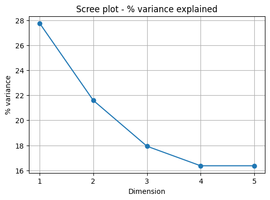
var_coords = mca.column_coordinates(data2) # coordinates of variablesplt.figure(figsize=(6,6))for i, var in enumerate(var_coords.index): plt.arrow(0, 0, var_coords.iloc[i,0], var_coords.iloc[i,1], color='red', alpha=0.5, head_width=0.03, length_includes_head=True) plt.text(var_coords.iloc[i,0]*1.15, var_coords.iloc[i,1]*1.15, var, fontsize=9)# Vẽ unit circletheta = np.linspace(0, 2*np.pi, 100)plt.plot(np.cos(theta), np.sin(theta), linestyle='--', color='black')plt.axhline(0, color='black')plt.axvline(0, color='black')plt.xlim(-1,1)plt.ylim(-1,1)plt.gca().set_aspect('equal', adjustable='box')plt.title("Carte des variables de la MCA")plt.show()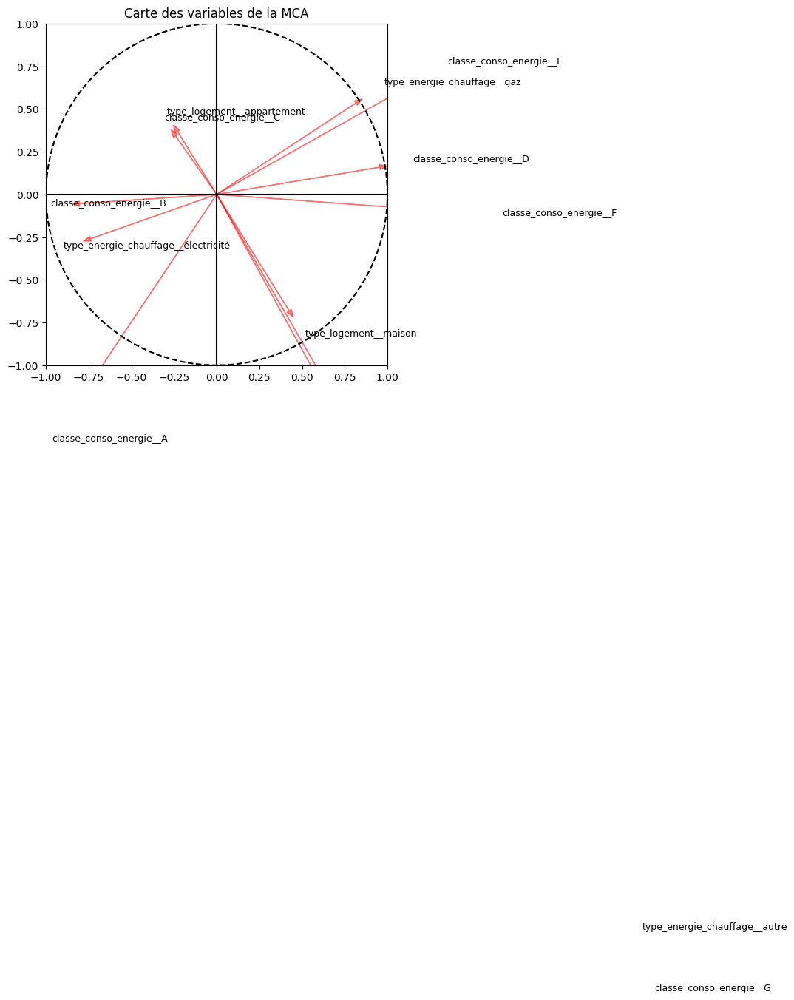